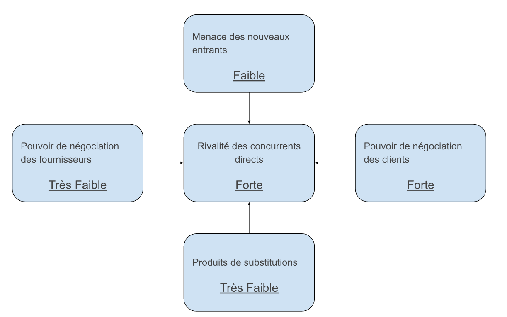

recherche
recherche
Ikea possède de nombreux concurrents à l'échelle internationale tels que Designs Inc, Galiform PLC, WALMART Magasin Inc., Argos et autres. En plus des concurrents nationaux avec par exemple BUT ou Conforama. Pourtant Ikea est le leader incontesté du marché de l'ameublement grâce à leur ancienneté et expérience. De plus le marché de l’ameublement est en maturité en europe et amérique du nord et en croissance voir émergence en asie
Ikea étant le Leader mondial, cela réduit grandement les risques de nouveau entrant. De plus leurs production standardisée permet des prix de vente avec lesquelles des nouveau entrant ne peuvent pas rivalisé
Le pouvoir de négociation des clients est fort en raison de l’importante concurrence qui leur offre d'autres alternatives.
Le pouvoir de négociation des fournisseurs est très faible car il existe de nombreux fournisseurs. De plus Ikea forme des relations fortes avec ses fournisseurs.
La menace de produits de substitution est très faible car trop peu de produits ou services peuvent remplacer la demande en meuble.
